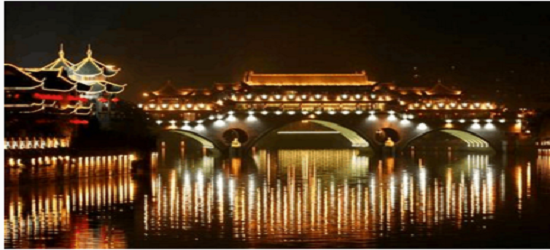
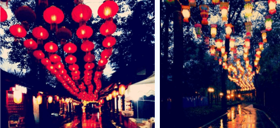
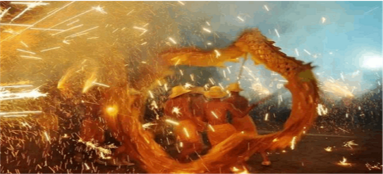
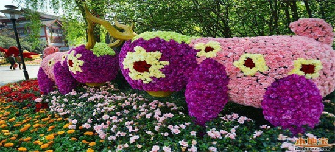
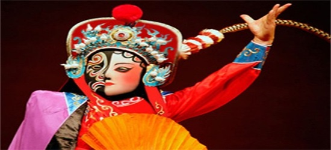
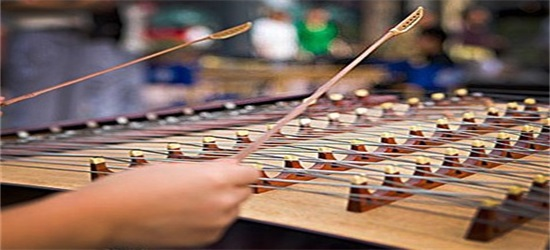
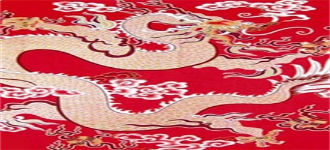

与大多数城市一样，成都没有特别的服饰，主要是根据时代的不同穿着也跟着改变，但大都是南方服饰，现代都穿现代装。清末成都人的衣物服饰，既有华丽温软的丝绸、裘衣，也有难以蔽体的破布衫、烂麻布。与此同时，时髦的老成都人开始喜欢上西方服饰，日益追求时髦。
安顺廊桥，川大钟楼，塔子山九天楼，都算比较具有标志性的古建筑。稍微有点厚重感的可能要算金沙遗址博物馆。如果要现代化的建筑，那就要到天府新城去，有知名建筑设计师安德鲁设计的成都市科技创新中心，中国三峡集团公司总部，青羊工业园旁边的中国一航成都飞机设计研究院总部大楼，在数码广场旁边有 知名建筑设计师斯蒂芬-霍尔为成都设计的来福士广场（2008年荣膺世界绿色环保建筑金奖，2008年国际新锐建筑奖项），此外成都市新建市立博物馆也非常新颖，获得了国外各大建筑设计网站和杂志的推崇和好评。

成都方言作为北方方言的一个分支，拥有北方方言的一些共同特征：古全浊声母清化；平分阴阳，有阴平和阳平；没有翘舌音声母；有韵母ae比如“安”、“谈”（这本来只是“女音”，但现在年轻一辈男生也多有趋同）
和中国其他方言一样，成都方言早先一直处于相对稳定的状态。1980年代之后，随着成都以及整个中国经济的迅速发展，成都和外界的交流急剧增多。受普通话的影响，成都方言相对稳定的状态被打破，语音开始经历一个明显变化的时期—向普通话的语音靠拢。另外，如果一个字在音系上显得孤立，则这个字更容易被北京方言同化，而如果一个字在音系上有一个强大的“系列”，则不容易向北京方言靠拢。究其原因，是因为後者更容易被人们发现其在四川方言中的规律，故更容易跟普通话保持区别。
《成都方言》经过作者马骥数年的搜集整理，汇集了成都的传统方言及现代方言，添加新词甚多，科学造字量之大，在内容及词汇上超过以往任何四川方言类图书，可谓与时俱进。独树一帜。加上精心编排，通俗现代，查找特别方便，更有别于学术性书籍。另附有特色篇章，开篇愉快，贴近生活，可读性强，《成都方言》是一部难得的众口味图书，有助于热爱成都方言的人们参考借鉴。
宗教信仰
说到成都市区的佛教圣地，首先让人想到的是位于一环路的文殊院。走进这座古庙，临面给人带来的是一种安静祥和之感，没想到繁华之地竟然有如此清静的地方。寺内钟声环绕、香火不断，给人一种心灵的净化，所有的烦心事、所有的不安躁动，在此刻消失殆尽。作为一座古庙，其文物荟萃，宝物众多。有康熙帝御笔留下的“空林”二字，也有大大小小300余尊佛像，其造型精美，给人带来极大的视觉盛宴。佛教的精髓在这片繁华的土地上得到了传播，人们浮华的心灵也得到了沉淀。作为这座城市的过客，每次去文殊院都会得到不同的精神洗礼。而这种特殊的感觉，也只有像我这样的过客才能有最深体会。
在顺城大街的富力天汇旁边，同样有着一座能给这座城市带来精神依托的圣地，那就是上翔堂。作为成都最大的基督教堂，其发展的历史也近乎坎坷，但凭借其深蕴的文化内涵，最终得到鼎盛的发展。每到周末，做礼拜的人齐聚一堂接受着主的洗礼。不同于文殊院的是，上翔堂的信徒大多是中老年为主。另一方面，教堂没有寺庙的清幽的氛围，却给人带来一种庄严之感。在教堂内驻足，看着做礼拜的人们，总能给我这样的过客一种心灵的厚重感，不在让人那么轻浮，那么飘渺。正如圣经里所说：在上帝带领下“如鹰展翅上腾”的上翔堂，这殿后来的荣耀比大过先前的荣耀，在这个地方我必赐平安，这是万军之耶和华说的。
说了佛教的文殊院和基督教的上翔堂，再谈一下本土宗教道教。位于成都西南郊的川西第一道观青羊宫，其秉承了道教文化的大乘。作为道教发祥地的青城山，把道教最精髓的文化通过青羊宫传播给成都的信徒。这里没有佛教寺庙悠悠的钟声，也没有基督教堂朗朗的唱诗声。道观中清幽的文化氛围，顿时给人一种闲适之感，而这种感觉，正好和成都这种安逸的生活情调相融合。一种洒脱、一种信仰给人一种不一样的体验。道观里面品茶的人们，不正是印证了道教文化的魅力所在。
节庆活动
成都灯会：正月十五，成都灯会是在元宵赏灯习俗的基础上发展起来的一种传统
民俗活动，为期一个月。灯会期间，公园内有民间曲艺、杂技表演，还有各种地方风味小吃，热闹非凡。

黄龙溪火龙节：正月初二至正月十五，双流县黄龙溪古镇的火龙灯舞源远流长，起源于南宋时期。其活动内容包括烧火龙、彩龙表演、南狮表演、漂河灯、燃放孔明灯、燃放烟花爆竹、听川剧座唱等。

成都花会：农历二月，成都花会始于唐宋，地址就在成都西门外的青羊宫，届时，名贵花卉、家栽盆花、盆景等都会被运到青羊宫，进行展销。传说道教始祖李老君的生日是农历的二月十五，故唐代以来，民间在此举办一年一度的庙会。又因成都的二月正是天气晴和、春意宜人、百花盛开的季节，故又传二月十五日是百花的生日。因此，每年二月又在这里举办花会。

民间文化
川剧变脸是川剧表演的特技之一，用于揭示剧中人物的内心及思想感情的变化，即把不可见、不可感的抽象的情绪和心理状态变成可见、可感的具体形象——脸谱。
川剧变脸是运用在川剧艺术中塑造人物的一种特技。是揭示剧中人物内心思想感情的一种浪漫主义手法。

四川扬琴是中国四川曲种。约形成于清乾隆年间。流传于成都、重庆等大中城市。至光绪时已有艺人100多名，并分为南会、北会两派。南派行腔华丽，细腻柔美；北派工稳豪放，长于叙事。
唱腔优美，韵味浓郁。它与川剧关系密切，川剧将扬琴唱腔作为练习唱功的基础课。扬琴为主奏乐器，与京胡、三弦合称三大件，又与碗碗琴、鼓板合称五方。传统演出形式一般为数人坐唱，分生、旦、净、末、丑、杂等各行脚色。传统曲目丰富，清末戏曲作家黄吉安写本尤为人称道。

蜀绣又称“川绣”，是以四川成都为中心的刺绣品的总称。产于四川成都，绵阳等地。蜀绣与苏绣、湘绣、粤绣齐名，为中国四大名绣之一。
蜀锦是指中国四川省成都市所出产的锦类丝织品，大多以经向彩条为基础起彩，并彩条添花，其图案繁华、织纹精细，配色典雅，独具一格，是一种具有民族特色和地方风格的多彩织锦。

.jpg)